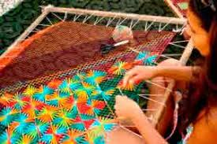

Tapeçaria
Curso de Tapeçaria para Iniciantes - 5 Módulos
Módulo 1: Introdução à Tapeçaria
Apresentação dos materiais e ferramentas básicas da tapeçaria.
Explicação dos diferentes tipos de tecidos e fios utilizados.
Noções de segurança e cuidados durante o trabalho com tecidos.
Módulo 2: Técnicas Básicas de Tapeçaria
Aprenda as técnicas fundamentais, como ponto de liçadeira, ponto de arremate e ponto de tecelagem.
Prática de diferentes pontos e padrões para criar texturas e designs interessantes.
Dicas para a escolha adequada de pontos de acordo com o projeto.
Módulo 3: Criação de Desenhos e Padrões
Como criar um desenho ou padrão para sua tapeçaria.
Exploração de diferentes técnicas de transferência de desenhos para o tecido.
Como adaptar e modificar padrões existentes para personalizar seu trabalho.
Módulo 4: Projeto de Tapeçaria em Pequena Escala
Desenvolvimento de um projeto de tapeçaria em pequena escala, como um tapete, almofada ou bolsa.
Aprenda a estruturar e planejar seu projeto, incluindo escolha de cores, tamanho e forma.
Prática das técnicas aprendidas nos módulos anteriores para criar um trabalho completo.
Módulo 5: Acabamento e Finalização
Como finalizar e dar um acabamento profissional ao seu trabalho de tapeçaria.
Aprenda técnicas de emenda de fios e ocultação de nós.
Dicas para a limpeza e conservação adequada da tapeçaria.